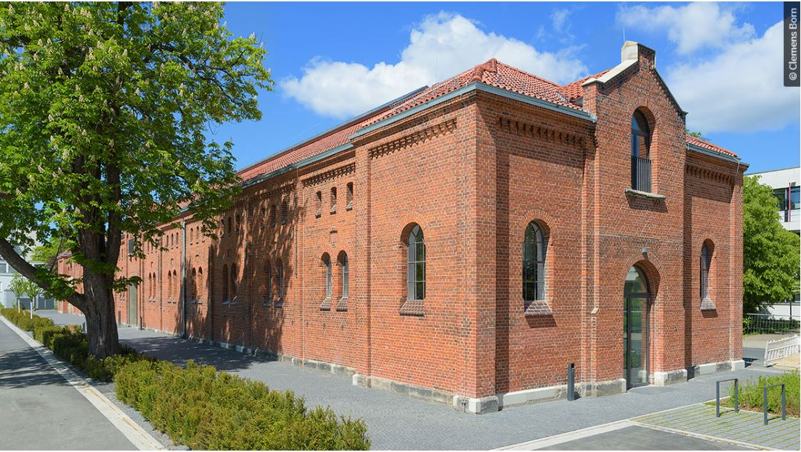

Venue
The workshop will be organized at (Königlicher Pferdestall) Appelstraße 7, 30167 Hannover, which is a communication and meeting center for science and culture at the Leibniz University of Hannover. The building is located near the Faculty of Electrical Engineering and Computer Science and the L3S research center. Here you can find the building location from Google Maps.

Transportation
Using public transportation in Hannover area is fairly easy. To find a route to your destination, use Journey Planner. Tickets can also be bought online using smartphone conveniently.
Participants using self transport can use the free street parking on Appelstr., and the dedicated parking lot in front of the building.
An example of Journey Planner:
From Airport to workshop venue
Accommodation Information
If you need accommodation, city centre has many options to choose from. Many are within walking distance from the venue or at least within a short tram or bus ride.
Werkhof Hotel ☆☆☆
A moderately priced hotel in an excellent location close to the venue.
Link: Werkhof Hotel
B&B HOTEL Hannover-City ☆☆
Moderately priced hotel, closer to venue.
Link: B&B HOTEL
Haus Sparkuhl Hotel Garni ☆☆☆
Located closer to several businesses in the city, this hotel is a good choice if you don't mind a bit longer travel time to the venue.
Link: Sparkuhl Hotel
Premier Inn Hannover City University Hotel ☆☆☆☆
Located at the heart of Hanover city centre, close to the Herrenhausen Gardens and Hannover main station. This hotel offers everything you'd expect from a bigger hotel for a moderate price. The venue can be reached easily with a tram and short walk.
Link: Premier Inn Hannover City Hotel